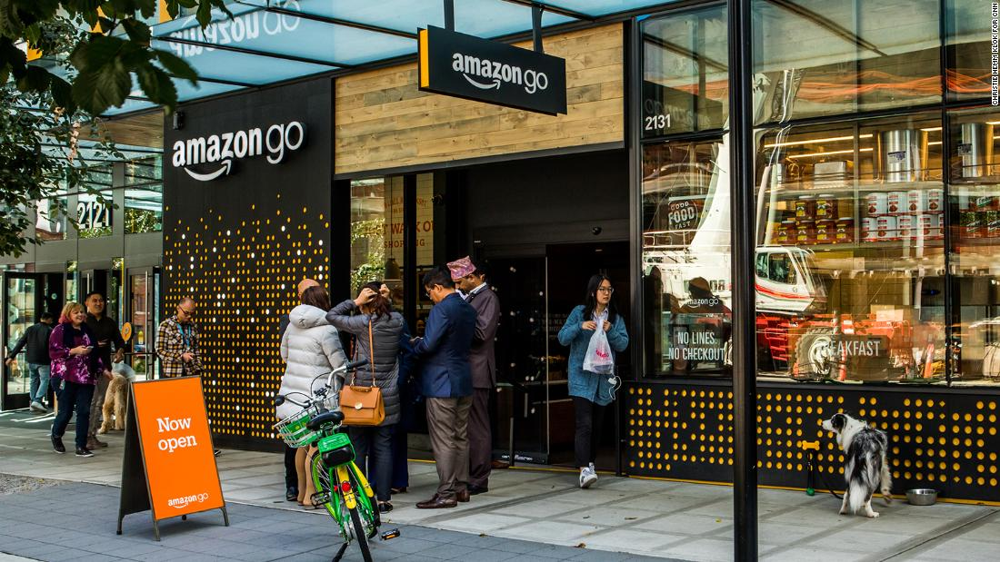
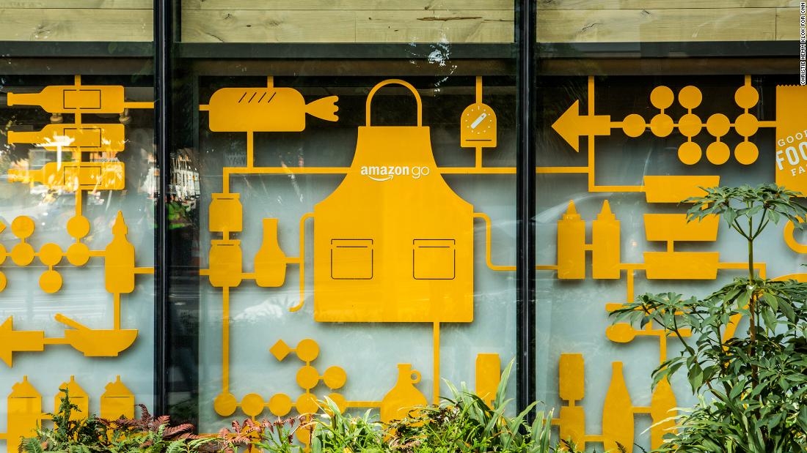

I spent 53 minutes in Amazon Go and saw the future of retail
By Matt McFarland, CNN Business Updated 2139 GMT (0539 HKT) October 3, 2018
Seattle (CNN Business)- If you want to glimpse the future of retail, check out an Amazon Go store. They're sleek and modern, with a minimalist vibe. Black merchandise racks. Wood veneer. Polished concrete. Pop music plays softly in the background; cameras nestled in the ceiling monitor your every move as you wander the aisles. "Big deal," you may be thinking. "Sounds like Whole Foods." True. But you won't see a single cashier, cash register, or self-service checkout stand. Such things have no place in the future. You simply walk in, grab what you need, and go. Amazon bills your credit card as you pass through the turnstile on your way out. Moments later, an app in your phone provides a receipt detailing what you've bought, what you paid, and even how long you spent inside. Amazon runs three Go stores in its hometown of Seattle and another in Chicago. It plans to open others in New York and San Francisco soon and, according to a recent Bloomberg report that Amazon declined to comment on, as many as 3,000 others by 2021. Despite the small presence, the stores, which rely upon sophisticated image recognition software and artificial intelligence, promise to upend the retail experience.
The Amazon Go storefront. Inside, you won't see a single cashier, cash register, or self-service checkout stand.
"Amazon Go is the disruptor that essentially replaces everything that is used to transact," said Mark Cohen, who spent decades in the retail sector before leading retail studies at Columbia Business School. Imagine a world where you never wait in line, or even open your wallet. A world where stores know so much about you that they recommend products and lead you right to them. A world where shoplifting, which according to the National Retail Federation drains some $47 billion from retailers nationwide each year, is all but impossible. I know, because I tried.
Time to Go
Before you can enter Amazon Go, you must install an app, because there's always an app these days, and log in with your Amazon account. As you pass through the gleaming turnstile at the door, you scan your personalized barcode from the app. Hundreds of cameras track your every move, keeping tabs on everything you put in your basket. The cameras create a three-dimensional representation of you that looks a bit like the monochromatic and slightly blurry videos made by a Microsoft Kinect. Amazon uses these images to know that it was you, not the guy next to you, who grabbed that bottle of seltzer. Amazon says it keeps that data just long enough to provide you with an accurate receipt, although a small subset of the info might be retained to further train the algorithms that make everything work. Amazon's software is sophisticated enough to discern from the labels and packaging that you chose black cherry, not lime, seltzer. Packaged foods like sandwiches, wraps, and salads bear a unique pattern of circles and diamonds that works a bit like a QR code. The software reads that code and knows you selected a turkey wrap. Weight sensors on each shelf know when you've removed something, and when you've changed your mind and put it back. Amazon Go's innovative grocery concept store. The first Go store opened in January.
Amazon won't say much more than that about how the Go store works because most of the technology is proprietary. You aren't charged for anything until you've left the store, and if Amazon gets something wrong, it will refund your money. You'd think such a system would be easy to fool. Nope. Before grabbing my water and wrap, I'd spent nearly an hour wandering around with Amazon execs, pointing at things and asking questions. Not exactly typical shopping behavior, and I thought it might confuse the AI. I also covered those circles and diamonds with my hand as I took the wrap from the shelf, and stood with my back to the cooler and reached backward to get my water. Thinking I may have found the system's weaknesses, I left the store. A minute passed, and then another, with no receipt. I started to wonder how you I might go back to pay for something in a store with no cashiers or customer service desk. A moment later, I glanced at the Amazon Go app and saw a charge for $11.68 appear. The receipt also told me that I'd spent 53 minutes and 33 seconds in the store — information Amazon says it records simply because it makes trips more fun.
Amazon gets physical
Amazon started working on retail stores five years ago, with an eye toward eliminating consumer pain points. "One of the things that kept coming back was people don't like waiting in lines," said Dilip Kumar, Amazon vice president of Amazon Go. That may be true, but research shows that people who wait in line tend to buy more stuff to offset the time lost standing around waiting to pay for it all. And there's some evidence that long lines provide social proof that may actually attract more customers — that is, people tend to think, "Wow, that place must be great if all those people are standing in line." But all of this research compares consumer attitudes to standing in a short line versus a long line. No one has examined how consumers behave when they don't have to wait at all. The first Go store opened in January. Amazon declined to say how many transactions it has made, but did say mischarges are rare. It has no immediate plans to introduce the technology at Whole Foods, and would not say whether it would sell it to other retailers. But there's certainly an appetite for it elsewhere in the retail sector, which would save vast sums on labor costs — research has shown that as many as 7.5 million retail jobs are at risk of automation in the next decade alone — while selling you more stuff. Pascal Finette, the chair of entrepreneurship and open innovation at Singularity University, sees a day when stores like Amazon Go and others that use similar technology make specific recommendations. "Hey Matt, we know you love to grill, and we know you like steak. We've got a special on ribeyes right now!" The AI might recommend side dishes — a green salad with blue cheese dressing, or a bag of frozen fries. Couple that technology with augmented reality and stores could provide directions to the butcher counter, and then to the steak sauce. At least one startup is already developing in-store directions for an Amazon Go-like store. Silicon Valley startup Zippin is already developing technology that can guide customers to any item in stock. Automated pricing, already used for things like airline tickets, could come to retailers as well. A store's AI might see you, a loyal customer, standing in front of the yogurt case or trying on winter coats and offer a 15 percent discount. Or it might charge you more, because it knows you're in a rush and live in an affluent zip code. Prices may also fluctuate in real time based on demand, just like ridesharing. Amazon isn't alone in making Go technology happen. Zippin packed similar tech into a tiny convenience store in its hometown. The startup has no intention of opening its own grocery stores; Zippin opened the store in August only to prove the tech works. Zippin hopes to sell it to other retailers. "In 10 to 15 years, we should expect this to be the norm," said Zippin CEO Krishna Motukuri. "Every single store will become completely checkout free." But independent experts say it's hard to predict exactly when the technology will go mainstream. Cohen doesn't expect the technology will be economically viable for many businesses in the very near future. It could take a generation. Jerome Glenn, CEO of the futurist Millennium Project, compares Go technology to Internet protocols, which emerged in the 1960s, but weren't common until the 1990s. Zippin sees small stores and specialty retailers embracing the tech first because they require less retrofitting and their smaller inventories are easier for the technology to manage. Plus, outfitting a full-size supermarket or big-box retailer would cost hundreds of thousands of dollars. Ultimately, these installation costs should be offset by lower long-term labor costs, but Zippin isn't rushing to launch in big stores. Beyond saving money on labor, Motukuri says, retailers could boost profits. A highly automated system could make ordering and restocking a breeze because cameras will track inventory in real-time. Eliminating cash registers will provide more space for inventory, he said, or allow retailers to rent smaller spaces. And all that customer data will allow retailers to target them with offers, discounts, and other enticements. "We are on the verge of one of the biggest transformations in retail since the early days of e-commerce, and retailers know they need to get on board or miss the wave," Motukuri said.Pass Go and collect 200 bits of biometric data
Customers will also have to get used to stores knowing more about them, and decide if they're comfortable with trading privacy for convenience. "Privacy questions overhang all of these new wave technologies," Cohen said. "My guess is people won't care unless they get hacked." Glenn expects retailers to collect even more data as they eventually turn to biometrics to identify people as they enter, and to charge their credit cards when they exit. The idea of scanning a phone on a turnstile will seem quaint. You'll simply nod your head as you enter to agree to the terms and conditions and create a store account. "People want more pleasure with less work. If a store can do that, it'll succeed," he said. Then every time you enter, you'll hear a custom greeting, and personalized suggestions. He can see retailers partnering with insurance companies, for example, to help you make healthy choices. Was your cholesterol high at your last check-up? The store might recommend sports attire, or healthy food items. Doctor says you really ought to cut down on your drinking? That welcoming voice might mention deals on tea or flavored waters. And if hearing a voice isn't your thing, customers wearing augmented reality contact lenses might see recommendations. Stores that don't offer the ease of checkout-free shopping and personalized tips customers want may struggle to compete, Glenn said. Some are already trying to catch up. Amazon's rival Walmart announced a partnership with Microsoft in July. The companies released few details, but a Reuters report earlier this summer said they plan to build a competitor to Amazon Go. That shouldn't be surprising. Even a retailer as big as Walmart has to face a stark choice: Adapt to the coming future of retail — or risk not surviving it.Source - https://edition.cnn.com/2018/10/03/tech/amazon-go/index.html
My Profile

I am a student in the faculty of Informatics Engineering Batch 2018 at Pasundan University in Bandung, Indonesia (http://unpas.ac.id) and a software engineer currently living in Bandung, Indonesia. My interests range from technology to video games. I am also interested in gaming and programming.
A little about my self I've been programming since 2012 where at first I started coding in .bat language where i only could make a simple calculator and a simple text based games, after a year later around early 2013 I started using Unity 3D Game Engine (http://www.unity3d.com) to make games and to this day I'm still using Unity3D to make games, even though I have a long hour with Unity3D i never managed to finish a game because of multiple reasons also I've kept all my deprecated project in my GitHub (http://github.com/itsproinc/deprecatedprojects) where I could use some of it for future reference in coding, etc. All my current projects are in Bitbucket (http://bitbucket.org) with private repos for some reason, anyway since now I have a friend to work with it'll be easier to work on my game and be sure to finish developing it. Before I went in to the University I am a self-taught programmer from various educational website on the internet like w3schools, Stackoverflow, Unity forum, etc.
I have a game studio called CarbonPoint Studios, whereas of now we are a group of 2 persons where my friend do all the 3D modelings/arts, music, story, etc and I do all the programming, making it happen in the game engine, and developing the website where you'll be able to access soon.